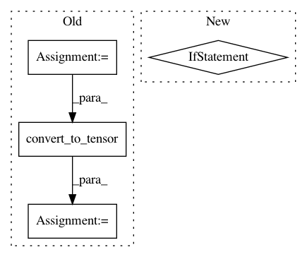

4aef40d869462e0aae0920354df6b08a177a54df,gpflow/base.py,Parameter,log_prior,#Parameter#,66
Before Change
def log_prior(self):
x = self.read_value()
y = self._unconstrained
dtype = x.dtype
out = tf.convert_to_tensor(0., dtype=dtype)
bijector = self.transform
if self.prior is not None:
out += tf.reduce_sum(self.prior.log_prob(x))
After Change
x = self.read_value()
y = self._unconstrained
if self.prior is not None:
out = tf.reduce_sum(self.prior.log_prob(x))
if self.transform is not None:
log_det_jacobian = self.transform.forward_log_det_jacobian(y, y.shape.ndims)
out += tf.reduce_sum(log_det_jacobian)
return out
else:
return tf.convert_to_tensor(0., dtype=self.dtype)
@property
def handle(self):
return self._unconstrained.handle
In pattern: SUPERPATTERN
Frequency: 3
Non-data size: 4
Instances
Project Name: GPflow/GPflow
Commit Name: 4aef40d869462e0aae0920354df6b08a177a54df
Time: 2019-10-14
Author: st--@users.noreply.github.com
File Name: gpflow/base.py
Class Name: Parameter
Method Name: log_prior
Project Name: stellargraph/stellargraph
Commit Name: ce597a0b10658043b6d6d8ffed3fff4a6ebbc1ea
Time: 2019-09-26
Author: u5824685@anu.edu.au
File Name: stellargraph/layer/ppnp.py
Class Name: PPNP
Method Name: __init__
Project Name: THUNLP-MT/THUMT
Commit Name: 4a471fc393aefa3c5c8e6670a900f93d6ba760cd
Time: 2018-04-08
Author: playinf@stu.xmu.edu.cn
File Name: thumt/utils/optimize.py
Class Name:
Method Name: create_train_op